11 focused screens: six custom-graphic deltas and five election walkthroughs. Proposed UI uses synthetic data; screen 10 contains actual local output captures. Open images at full size.
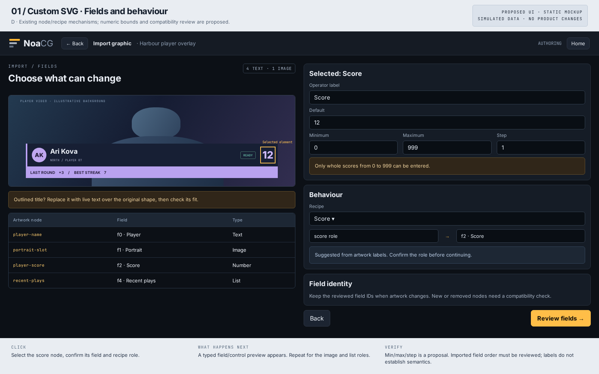
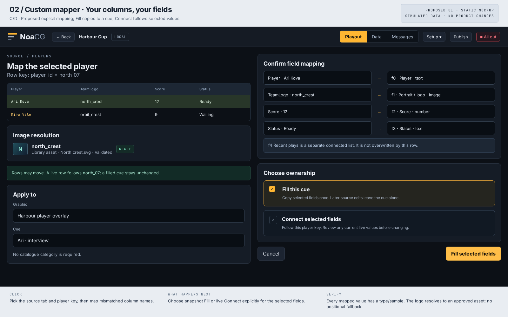
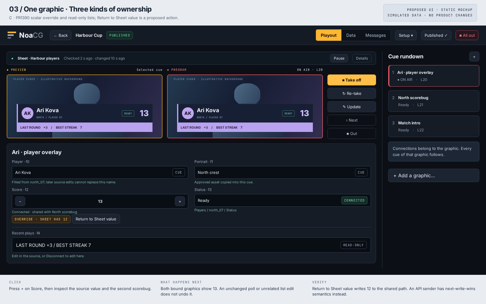
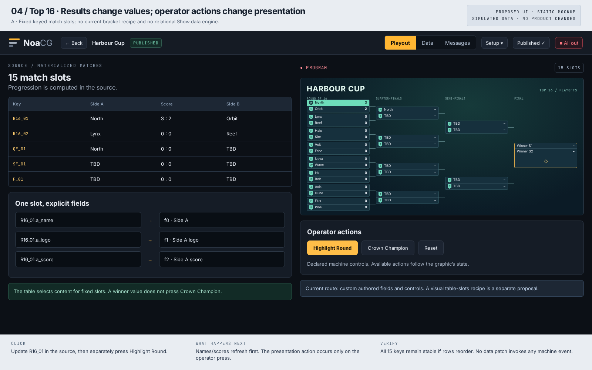
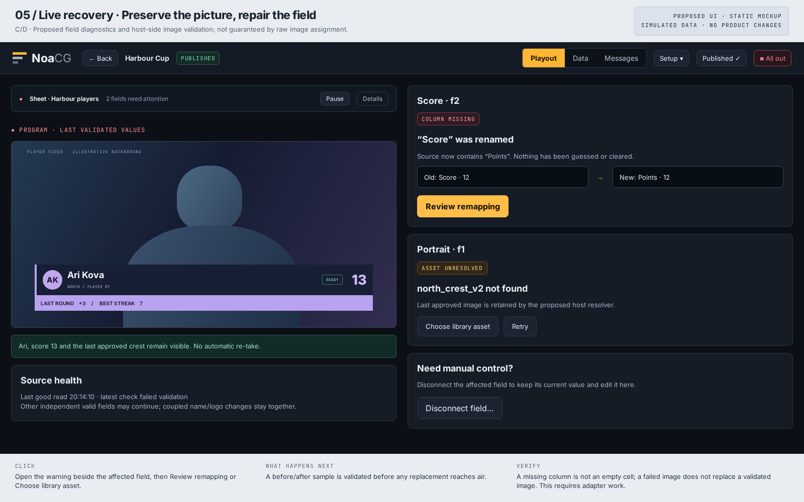
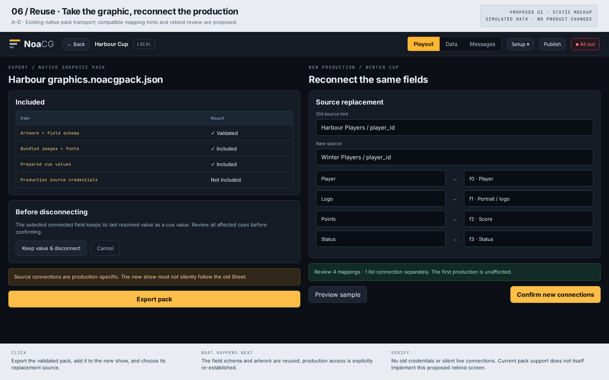
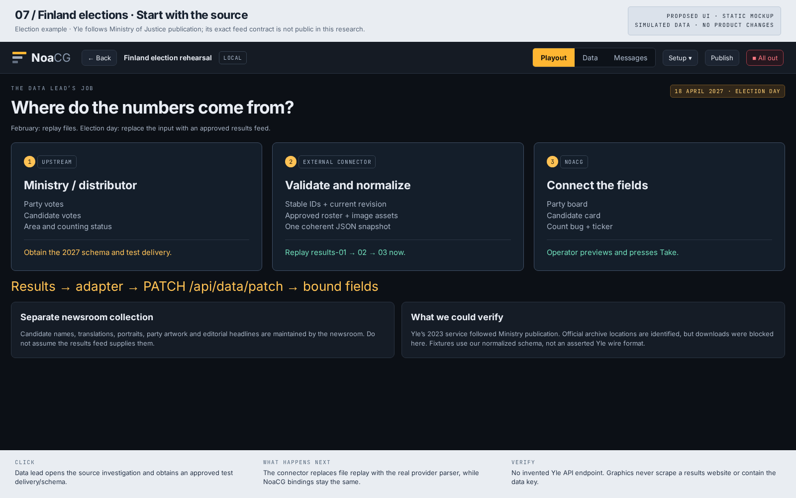
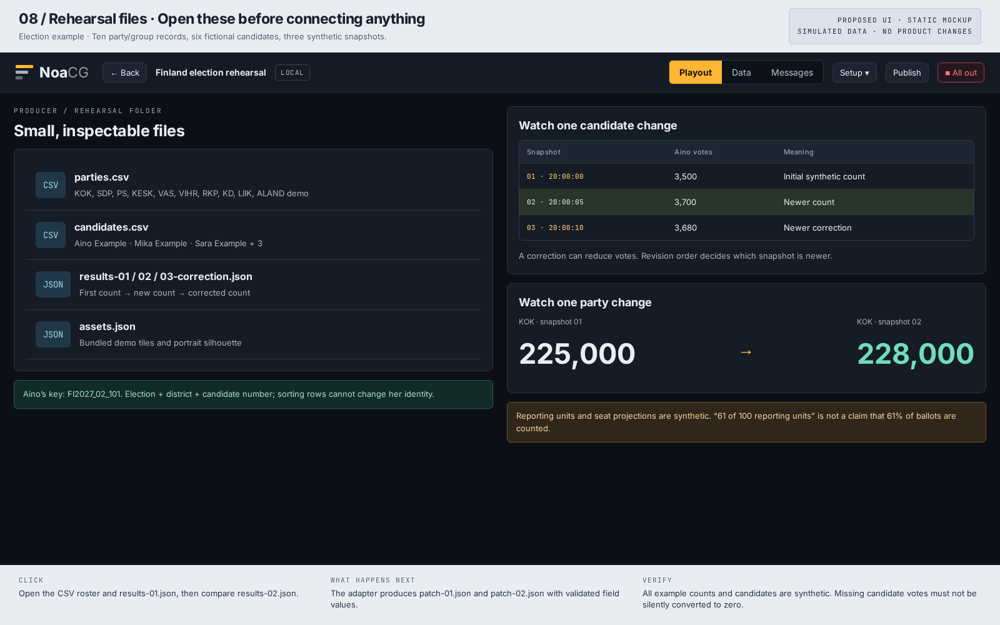
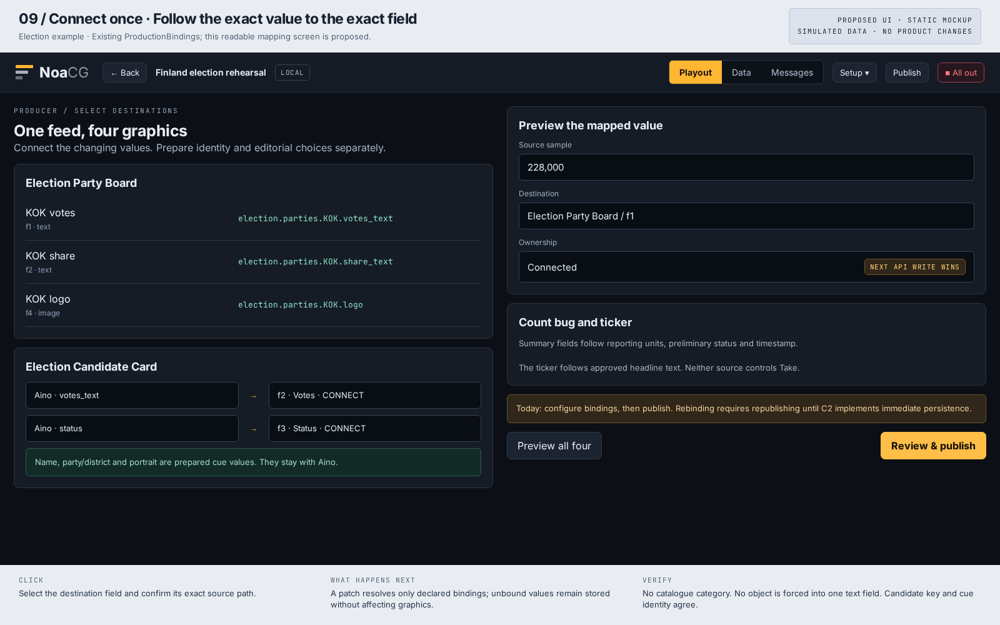
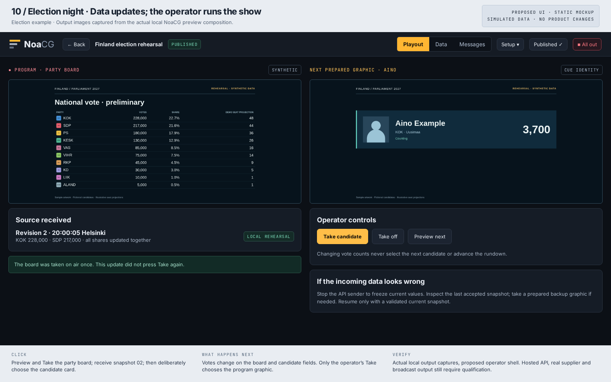
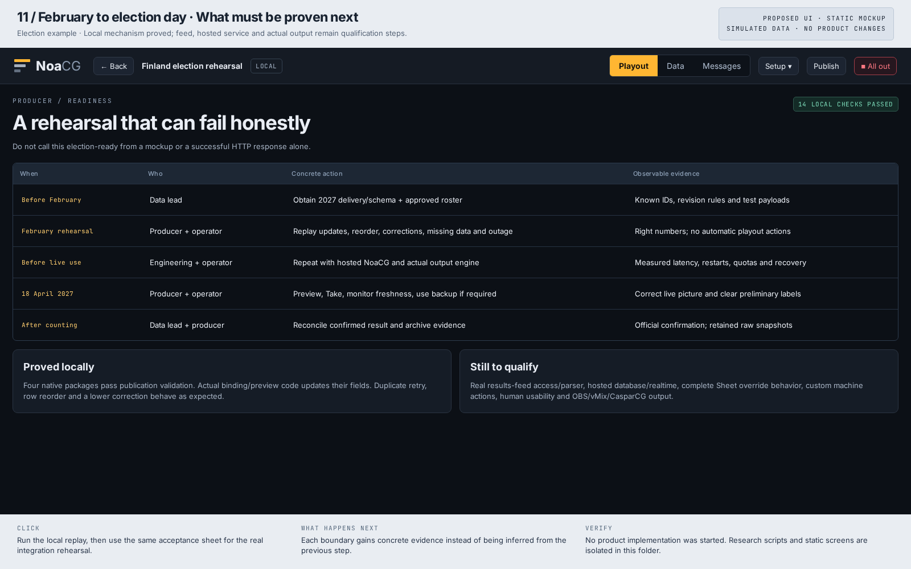
Based on repository UI and main eccb018d4, including PR #1390. No product implementation or hosted write. Read election/README.md for exact files, API request, actual local evidence and remaining qualification.